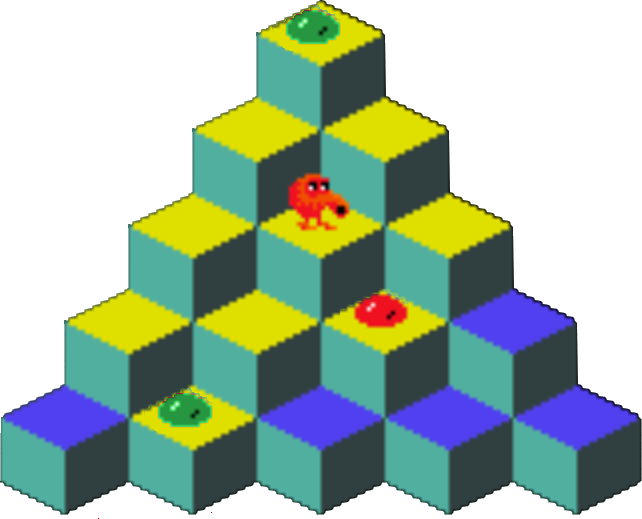

3. Skúška 27.1.2026 - Q*Bert¶
V osemdesiatych rokoch bola dosť obľúbená video hra Q*Bert:
{kind=link}

Červená potvorka skáče na vrchných plôškach kociek pyramídy a tieto sa pritom prefarbujú: zo žltých na modré a z modrých späť na žlté. Potvorka môže skákať len na susedné kocky: buď na jednu z dvoch kociek v rade pod sebou, alebo na jednu z dvoch kociek v rade nad sebou. Pri svojom skákaní nesmie vypadnúť z pyramídy von. Na niektorých kockách sa môžu ešte nachádzať zelené alebo červené bobuľky. Tie majú takýto význam:
ak potvorka príde na kocku so zelenou bobuľkou, tak ju odoberie a uloží si ju do svojho batoha
ak potvorka príde na kocku s červenou bobuľkou, tak ju odoberie a keďže táto je pre ňu jedovatá, tak by okamžite mohla zomrieť; lenže môže sa ešte zachrániť zelenou bobuľkou, ak ju má vo svojom batohu - vtedy ju odoberie z batohu a pokračuje v hre; zrejme ak zelenú bobuľku nemá, tak potvorka z plochy zmizne
Úlohou potvorky bude prefarbiť čo najviac kociek na rovnakú farbu: buď žltú alebo modrú. Napíš metódy triedy Q_Bert:
class Q_Bert:
def __init__(self, meno_suboru):
...
def __repr__(self):
return ''
def start(self, r, s):
...
def pohyb(self, smer):
...
@property
def zlte(self):
...
@property
def modre(self):
...
kde metódy
init(meno_suboru)- prečíta vstupný textový súbor s definíciou tvaru pyramídy, zatiaľ bez potvorky__repr()__- vráti textový reťazec v podobnom tvare ako bol vstupný textový súbor, ale aj s bobuľkami'o'alebo'x'ak je v hracej ploche potvorka, tak na jej mieste v ploche dá znak
"@"
start(r, s)- na danú pozíciu umiestni potvorku; ak sa už v hracej ploche nachádzala, tak ju premiestniaj toto umiestňovanie na nejaké políčko kontroluje bobuľky a prefarbuje hornú plochu
ak sa potvorka umiestnila mimo nejakej kocky, tak sa jednoducho z plochy odstráni
pozície v ploche (riadok, stĺpec) číslujeme od nuly presne rovnako, ako boli znaky vo vstupnom textovom súbore
batoh, do ktorého si potvorka ukladá zozbierané zelené bobuľky, je spoločný pre všetky aj neskôr umiestňované potvorky
pohyb(smer)vykoná v hracej ploche skok na susednú kocku, pričom smer je celé číslo a označuje:1= vľavo hore,2= vpravo hore,3= vpravo dole,4= vľavo dole;ak týmto krokom skočí na kocku, tak vrchnú hranu kocky prefarbí a odkontroluje prípadnú bobuľku
ak by týmto krokom skočil mimo kocku, tak príšerka umiera a z plochy sa odstráni (ďalším volaním
start()ožije a môže sa umiestniť niekde inde)parameter
smernemusí byť len číslo od 1 do 4, ale aj viacciferné číslo, v ktorom je každá cifra od 1 do 4 a potom potvorka postupne vykoná takto zadané pohyby (cifry berie zľava doprava)metóda vráti počet úspešne vykonaných skokov (kým nevypadne z pyramídy)
property
zlte, resp.modre- vráti množinu kociek so žltou farbou (ako množinu dvojíc riadok a stĺpec) resp. množinu modrých kociek (tiež ako množinu dvojíc)
Tvoj program by nemal nič vypisovať, lebo testovač to bude považovať za medzivýsledky spúšťaných testov.
Vstupný súbor na začiatku obsahuje samotnú pyramídu:
'.'- kocka so žltou hornou stranou'*'- kocka s modrou hornou stranou' '- prázdny priestor (mimo kociek)
Za ňou nasledujú riadky s popisom zelených a červených bobuliek:
v každom riadku je trojica: znak, číslo riadka a číslo stĺpca (oddelené sú medzerami)
znak je
'o'resp.'x', pre zelenú resp. červenú bobuľkučísla riadkov a stĺpcov sú celé čísla, pričom ich číslujeme od
0
Napríklad, súbor 'subor1.txt', ktorý popisuje horný obrázok, by mohol vyzerať takto:
.
. .
. . .
. . . *
* . * * *
o 0 4
o 4 2
x 3 5
V ďalších testovacích súboroch môžeš vidieť, že hracia plocha nemusí mať tvar pyramídy.
Potom takýto test:
if __name__ == '__main__':
q = Q_Bert('subor1.txt')
print(f'{q.start(1, 5) = }')
print(q)
print(f'{q.zlte = }')
print(f'{q.modre = }')
print(f'{q.pohyb(4) = }')
print(f'{q.pohyb(4422334) = }')
print(q)
print(f'{q.zlte = }')
print(f'{q.modre = }')
vypíše:
q.start(1, 5) = None
o
. @
. . .
. . x *
* o * * *
q.zlte = {(2, 4), (0, 4), (3, 1), (4, 2), (3, 3), (2, 6), (2, 2), (1, 3), (3, 5)}
q.modre = {(4, 4), (4, 0), (1, 5), (3, 7), (4, 6), (4, 8)}
q.pohyb(4) = 1
q.pohyb(4422334) = 6
o
. *
. . .
. . * *
* * * . *
q.zlte = {(2, 4), (0, 4), (3, 1), (4, 6), (3, 3), (2, 6), (2, 2), (1, 3)}
q.modre = {(4, 4), (4, 0), (1, 5), (3, 7), (4, 2), (4, 8), (3, 5)}
Môžeš si stiahnuť 1sk_3.zip s kostrou programu a testovacími súbormi 'subor1.txt', 'subor2.txt', 'subor3.txt', …, ktoré používa testovač.
Riešenie úlohy odovzdaj na testovací server https://vektor.fmph.uniba.sk/. Tvoj odovzdaný program musí začínať tromi riadkami komentárov:
# 3. skuska: q*bert
# student: Janko Hraško
# datum: 27.1.2026